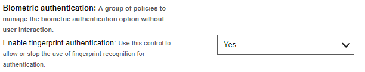
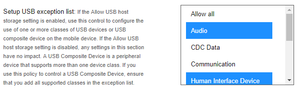
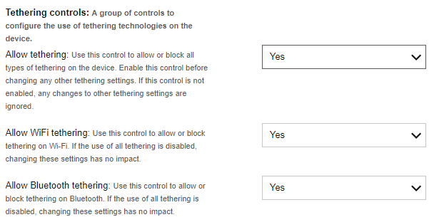
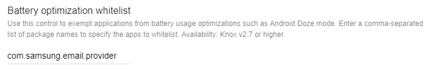
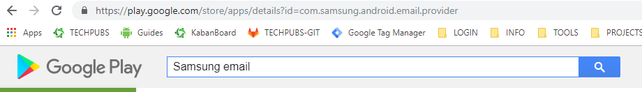
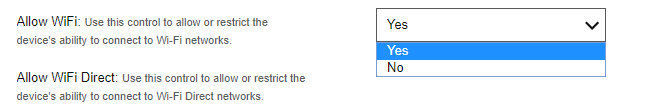
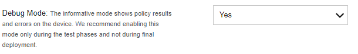

Apply basic policies
Last updated July 26th, 2023
Before setting any policies, ensure you have met the following prerequisites. Refer to your EMM documentation for instructions on how to complete these steps.
-
Your devices are deployed with Android Enterprise as fully managed device, company-owned device with a work profile, or a personal device with a work profile.
-
You have set up a Managed Google Play store.
-
You have added Knox Service Plugin as an approved app on your EMM.
Set a standard policy
Device-wide policies
These policies are applied to company owned devices. These devices are enrolled to an EMM during its initial setup, and they can be deployed as a fully managed device, or as a company owned device with a work profile (WP-C).
This example demonstrates how to set a Device-wide policy that requires a fingerprint as the minimum password strength. This configuration is applied to the entire device. You can repeat this sequence of steps for any policy that falls under Device-wide policies.
-
In the Knox Service Plugin managed configuration, under Device-wide policies, turn on Enable device policy controls.
-
Under Password policy turn on Enable password policy controls with KSP.
-
Under Biometric authentication turn on Enable fingerprint authentication.
-
In your EMM, save the profile and push it to a device.
-
Your policies are now applied.

Work profile policies
These policies are applied to personal devices (BYOD) with a work profile. These devices are enrolled to an EMM with a work profile after its initial setup.
This example demonstrates how to use Work profile policies to set the Android Allow Share Via feature. The particular policies used in this section require a free Knox Platform for Enterprise Premium license key. You can repeat this step sequence for other policies under the Work profile policies.
-
In the Knox Service Plugin managed configuration, under Work profile policies, turn on Enable work profile policy controls.
-
Under Device Restrictions turn on Enable device restriction controls.
-
If required, enter your Knox Platform for Enterprise Premium License Key. If your EMM natively supports Knox Platform for Enterprise Premium license activation, you don’t need to fill out this field. Check with your EMM for more information.
-
Disable Allow Share Via option.
-
In your EMM, save the profile and push it to a device.
-
Your policies are now applied.
Here is an example of a success message and an error message. The error message occurs if you try to apply a Premium policy to a device without first activating a Knox Platform for Enterprise Premium license key.
Set multiple policy parameters
Some policies allow you to select more than one option as a parameter. With these policies, you can individually select which parameters to enable or disable. In some cases, you may need to deselect policy parameters that you do not want to apply. For example, we set the USB exception list to allow only Audio and Human Interface Device. The following image shows a policy with multiple options applied.

To revoke multiple polices, simply deselect the polices you want to change and push the updated configuration profile to your devices.
Set group policies
Some policies are actually a subset of a larger group policy. With these policies, you must enable the group policy before you can modify any individual parameters. For example, we must first turn on Tethering controls before we can access the Allow Wi-Fi tethering and Allow Bluetooth tethering settings. The following image illustrates these settings.

Target a specific app
To target a specific app, you need to use the app package name in conjunction with a KSP policy.
-
In the Knox Service Plugin managed configuration, under Device-wide policies, turn on Enable device policy controls.
-
Under Application Management policies, turn on Enable application management controls.
-
Under Battery optimization insert the app package name you want to target, for example,
com.samsung.email.provider.-
If you want to add more than one app, enter a comma separated list of package names, for example
com.samsung.email.provider, com.samsung.android.app.notes, com.sec.android.app.voicenote. -
If you need to remove an app from a previously applied policy, simply remove the app package from your comma separated list and re-apply the configuration.

-
One way to find an app’s package is to search for it on Google Play in a browser. You see the app package appended to the URL in the browser, as seen in the following image.

Enforce a password policy
The first line of defense on a device is a strong device password. KSP offers granular controls for IT admins to enforce the use of a strong password as well as allow or block other authentication methods on a device. For example, let’s turn off biometric authentication methods for devices as well as enforce a specific password policy.
-
In the Knox Service Plugin managed configuration, go to Device-wide policies > Password Policy, and turn on Enable password policy controls with KSP.
-
Next to the Biometric authentication field, click Configure.
-
On the Biometric authentication page that opens, set all fields to False. Doing so turns off all biometric authentication methods for these devices. Return to the Password policy page.
-
Next to the Password Change field, click Configure.
-
On the page that opens, set the Enforce password change field to True. When you set the Enforce password change field to True, the device user is forced to set up a password — if one was not already set up — or change the password, if a password was previously set on the device.
-
In the Password enforcement timeout field, set a value for the number of minutes up to which the user can cancel or delay the password change. We recommend setting a low value to enforce a password change in a timely fashion. Return to the Password policy page.
-
Next to the Password Restrictions field, click Configure.
-
In the Maximum character sequence length field, set the maximum length of an alphabetic sequence that is allowed for a password.
-
In your EMM, save the Knox Service Plugin managed configuration and push it to a device. Your policy is now updated.
Revoke a policy
Revoking a policy is simple. All you need to do is find the policy you previously enabled and toggle it back off. For example, let’s turn Wi-Fi back on from our previous example.
-
In the Knox Service Plugin managed configuration, under Device-wide policies, turn on Enable device policy controls.
-
Find the previous policy you disabled, for example Allow Wi-Fi.
-
Turn Allow Wi-Fi back on.
-
In your EMM, save the profile and push it to a device.
-
Your policy is now updated.

Revoke a group of policies
You can also revoke an entire group of polices if you turn off the respective group control flag. For example, if you turn off Enable device restriction controls, then all device restrictions are revoked.
In addition, if a policy that is related to a configuration is disabled, all the configuration is revoked. For example, if Customize DeX Experience is turned off , then all settings under the DeX customization profile are revoked.
Test and debug policies
To test your polices, you use a feature called Debug mode.
-
Turn on Debug mode.

-
Set or update the policies you need.
-
Push the policies to a device.
-
Check the KSP app for debug information.
Tips on successful KSP deployments
-
Deploy payloads gradually.
-
Set policy changes in small batches and test them before setting more policies.
-
Disable debug mode in production after testing.
-
Assign unique profile names in KSP.
Settings can be configured in 2 main areas — the Device wide policies which apply to fully managed devices and company-owned devices with a work profile, and the Work profile policies which apply to personal devices (BYOD) with a work profile. The policy configurations at the bottom are for policies that support configuration profiles. Some Knox Service Plugin policies allow you to create and save multiple configuration profiles, and how they apply to your devices depends on specific policy behavior.
For details about how the Knox Service Plugin policies are organized, see the Schema structure.
During configuration, make sure not to navigate back in your web browser, or you will lose your progress. If the EMM console splits configurations into different sections, use the navigation controls inside the EMM to navigate. Navigation specifics vary based on your EMM.
On this page
Is this page helpful?